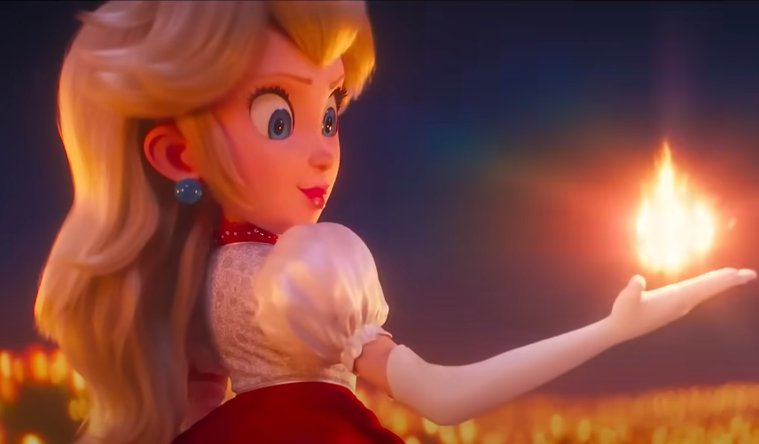

This article is about the upcoming 2023 animated film. For the 1993 live-action film, see Super Mario Bros. (film). For the 1986 animated film, see Super Mario Bros.: The Great Mission to Rescue Princess Peach! The Super Mario Bros. Movie A poster featuring various Mario characters (Mario, Luigi, Donkey Kong, Peach, etc.) Theatrical release poster Directed by Aaron Horvath Michael Jelenic Screenplay by Matthew Fogel Based on Mario by Nintendo[a] Produced by Chris Meledandri Shigeru Miyamoto Starring Chris Pratt Anya Taylor-Joy Charlie Day Jack Black Keegan-Michael Key Seth Rogen Fred Armisen Sebastian Maniscalco Charles Martinet Kevin Michael Richardson Music by Brian Tyler Koji Kondo Production companies Illumination Universal Pictures Nintendo Distributed by Universal Pictures Release dates April 7, 2023 (United States) April 28, 2023 (Japan) Countries United States Japan Language English The Super Mario Bros. Movie is an upcoming computer-animated fantasy adventure comedy film based on the Mario video game franchise published by Nintendo, who also co-produced the film with Illumination and its distributor Universal Pictures. It is the franchise's third film adaptation, following the Japanese anime film Super Mario Bros.: The Great Mission to Rescue Princess Peach! (1986) and the American live-action film Super Mario Bros. (1993). Directed by Aaron Horvath and Michael Jelenic (in Jelenic's feature directorial debut) from a screenplay by Matthew Fogel, the film features an ensemble voice cast including Chris Pratt, Anya Taylor-Joy, Charlie Day, Jack Black, Keegan-Michael Key, Seth Rogen, Fred Armisen, Sebastian Maniscalco, Charles Martinet, and Kevin Michael Richardson. After the critical and commercial failure of the 1993 live-action film, Nintendo was reluctant to license its intellectual properties for film adaptations. Mario creator Shigeru Miyamoto became interested in developing another film when Nintendo was bringing its older games to the Virtual Console service, and through Nintendo's work with Universal Parks & Resorts to create Super Nintendo World, he met Illumination founder Chris Meledandri. By 2016, the two were discussing a Mario film and in January 2018, Nintendo announced that it would collaborate with Illumination and Universal to produce it. Production was underway by 2020, and the cast was publicly announced in September 2021. The Super Mario Bros. Movie is scheduled for release in the United States on April 7, 2023, and in Japan on April 28.
Cast:
Development:
After the critical and commercial failure of the 1993 Super Mario Bros. film adaptation, Japanese video game company Nintendo became wary of licensing its properties for film adaptations. According to Mario creator Shigeru Miyamoto, the idea for a new Mario film came from bringing their older games to the Virtual Console and other services; such transitions took time for the company, and Miyamoto recognized that "our content business would be able to develop even further if we were able to combine our long-beloved software with that of video assets, and utilize them together for extended periods." Miyamoto knew that the process of making a film was far different from that of making a video game, and wanted a film expert to lead the effort. Following the November 2014 hack of Sony Pictures, emails between producer Avi Arad, studio chief Amy Pascal, TriStar Pictures head Tom Rothman, and Sony Pictures Animation president of production Michelle Raimo Kouyate were released revealing that Sony had been attempting to secure the film rights to the Mario franchise for several years. Arad visited Nintendo in Tokyo in February and July 2014 in an attempt to secure a deal. In October, Arad emailed Pascal and said he had closed the deal with Nintendo. Pascal suggested recruiting Sony Pictures Animation's Hotel Transylvania director Genndy Tartakovsky to help develop the project, while Kouyate said she could "think of 3–4 movies right out of the gate" and expressed hope in "build[ing] a Mario empire." However, after the emails leaked, Arad denied that a deal had been made, stating that negotiations had only begun. BuzzFeed News noted that the emails did not take into account potential conflicts with Sony Pictures' corporate sibling Sony Interactive Entertainment, one of Nintendo's chief competitors. Through Nintendo's work with Universal Parks & Resorts to create Mario-based attractions, later resulting in Super Nintendo World, Miyamoto met Chris Meledandri, founder of Universal Pictures' Illumination animation division. Miyamoto found Meledandri's creative process similar to his own and felt he would be the proper lead for a Mario film. They had started more earnest discussions by 2016, knowing that if they felt it would not work that they could easily walk away. In November 2017, reports emerged that Nintendo was collaborating with Universal and Illumination to make an animated Mario film. Then-Nintendo president Tatsumi Kimishima clarified that a deal had not been finalized, but that an announcement would come soon. Kimishima hoped that if the deal was successful, a 2020 release date would be possible. In January 2018, Nintendo announced that the film would progress with Miyamoto and Meledandri co-producing. Meledandri said the film was a "priority" for Illumination and that it will most likely come out in 2022. He added that Miyamoto would be "front and center" during production. In January 2020, Nintendo president Shuntaro Furukawa stated that the film was "moving along smoothly" with an expected 2022 release date. Furukawa also said Nintendo would own the rights to the film, and both Nintendo and Universal would fund the production. In August 2021, it emerged that Teen Titans Go! creators Aaron Horvath and Michael Jelenic were directing the film after the discovery of an Illumination animator's LinkedIn profile that included the film in their list. Following the full casting announcement, Horvath and Jelenic were confirmed to be directing, with Matthew Fogel attached as the screenwriter after previously scribing Illumination's Minions: The Rise of Gru (2022). According to Khary Payton, who has collaborated with Horvath and Jelenic on various projects at Warner Bros. Animation, the duo flew to Illumination Studios Paris a month after the release of their first feature film, Teen Titans Go! To the Movies, in September 2018. In September 2022, it was announced by New York Comic Con that the film's teaser trailer would be released on October 6, 2022; the teaser formally revealed the film's title, The Super Mario Bros. Movie. Shortly thereafter, Ed Skudder confirmed that he worked as head of story on the film.